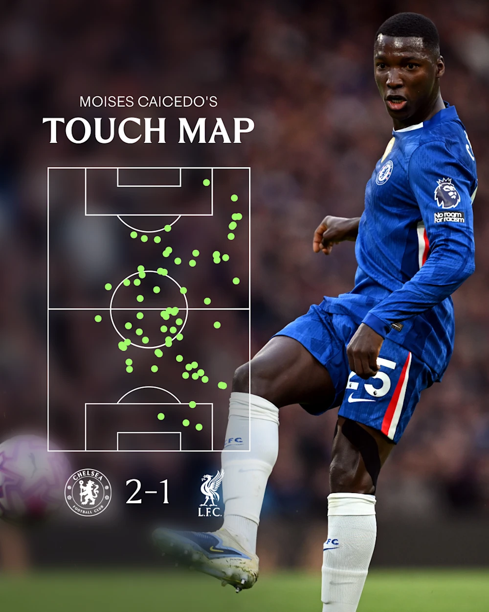
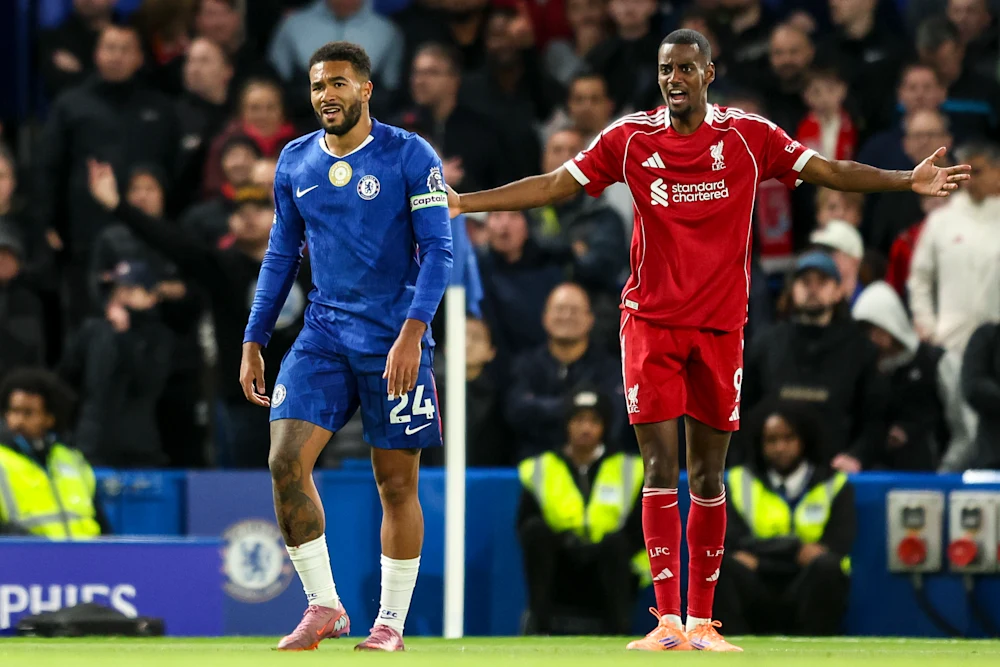
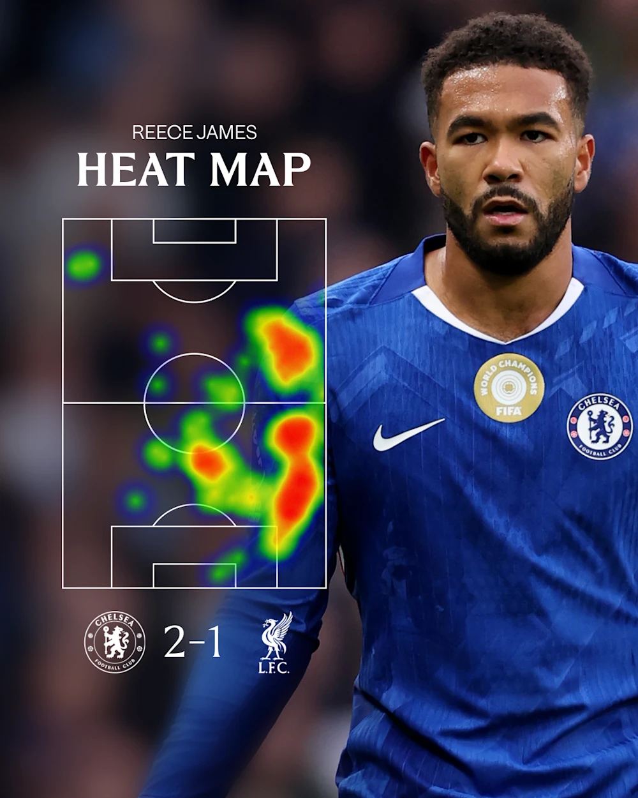
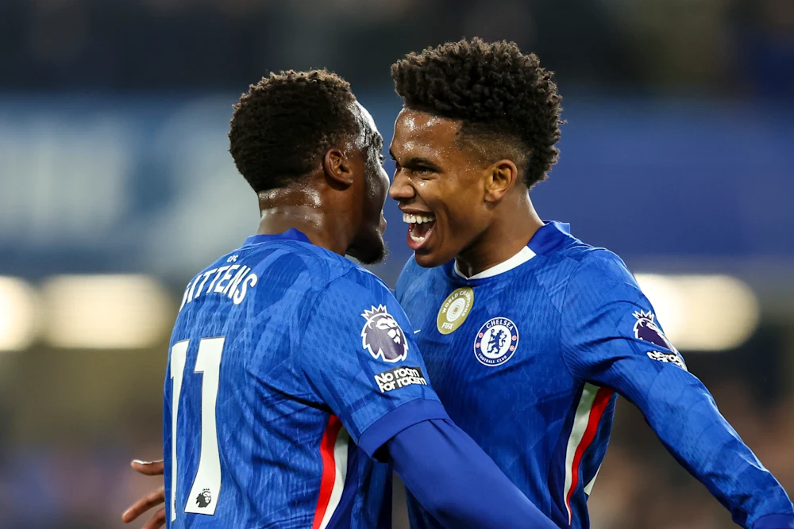
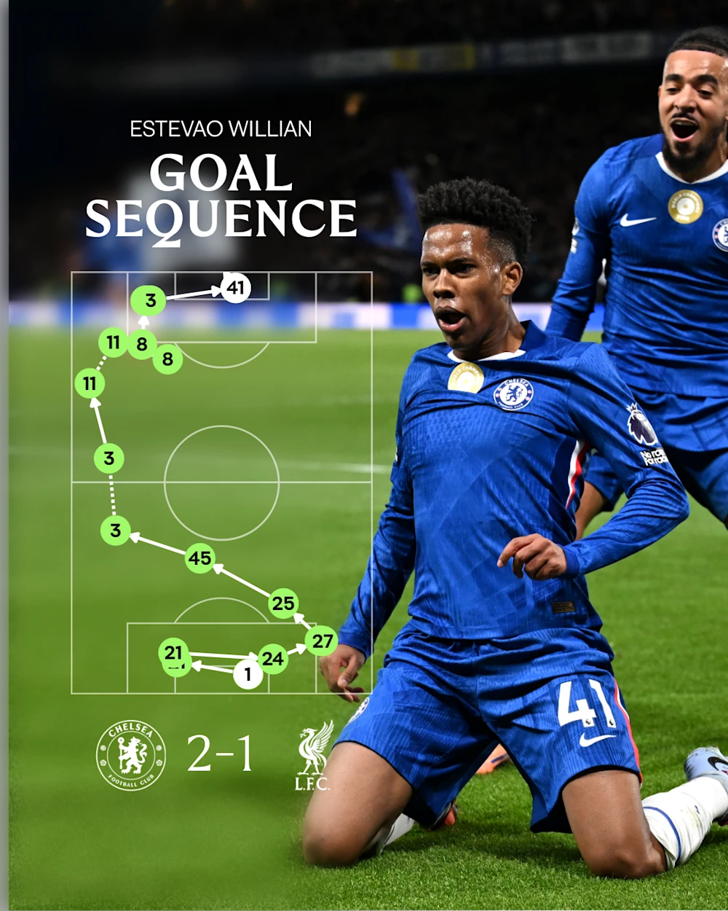
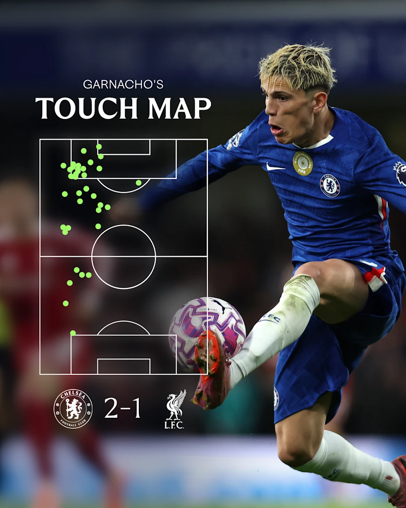

“Menyusul kemenangan dramatis Sabtu atas Liverpool, kami menyoroti empat aspek permainan yang berperan penting bagi kesuksesan kami.
Estevao Willian mencetak gol pada menit keenam perpanjangan waktu untuk mengamankan kemenangan berharga atas juara bertahan setelah Cody Gakpo membatalkan pembuka Moises Caicedo yang mengejutkan di Stamford Bridge yang parau.
Moises Monumental
Seperti yang dikatakan asisten pelatih Willy Caballero: ‘Apa lagi yang bisa dikatakan tentang Moi?’
Moises Caicedo adalah pemain resmi dan pendukung Chelsea Player of the Match setelah satu lagi tampil di tengah lapangan.
Di samping golnya yang tak terbendung, Caicedo membubarkan serangan Liverpool – dengan pembacaan permainan dan bersih dalam tekel – sebelum memulai sendiri dengan mematahkan garis The Reds. Tujuan kemenangan kami adalah contoh utama.

Moises ada di mana-mana!
Caicedo membuat lima pemulihan bola dan memenangkan dua tekel, angka-angka hanya lebih baik oleh James, tetapi itu adalah cara di mana ia menutupi setiap bilah rumput dari pertama untuk terakhir yang menarik mata – bersama dengan tujuan khusus itu, tentu saja.
Ini bukan satu kali dari Ekuador yang luar biasa tetapi bahkan untuk standarnya yang sangat tinggi, ini adalah kinerja khusus.
Rolls-Reece
Itu adalah kontes berdenyut yang surut dan mengalir. Penyebab kami tidak dibantu di babak kedua oleh kedua bek tengah awal, Benoit Badiashile dan Josh Acheampong, harus ditarik. Keuntungannya adalah bahwa itu hanya lebih lanjut menyoroti fleksibilitas Reece James.

Reece James membantu menjaga Alexander Isak tetap tenang
Enzo Maresca telah memilih untuk menyebarkan James di bek kanan dengan Malo Gusto diposisikan lebih jauh ke depan di tengah taman. Peran-peran itu, tentu saja, telah dibalik di masa lalu, termasuk di final Piala Dunia Klub ketika duo ini adalah kunci kemenangan kami atas Paris Saint-Germain.
Pada hari Sabtu, meskipun, itu James di bek kanan – setidaknya sampai Badiashile tertatih-tatih. Maresca menggantikan pemain Prancis itu dengan gelandang, Romeo Lavia. Gusto mundur ke full-back dan James melangkah masuk untuk bergabung dengan Acheampong di jantung pertahanan.
Kapten itu patut dicontoh. James mengakui setelah itu dia tidak pernah bermain di bek tengah, tetapi Anda tidak akan bisa menebaknya.

Peta panas Reece menunjukkan betapa menonjolnya dia di berbagai bagian lapangan
Dalam 40 atau lebih menit James menemani Acheampong dan kemudian Jorel Hato, ia memenangkan semua empat tekel ia mencoba, menyelesaikan 28 dari 31 operannya, membuat dua umpan kunci dan memiliki 40 sentuhan.
Tidak ada pemain di lapangan yang berhasil lebih banyak di salah satu departemen pada waktu itu. James juga memenangkan satu-satunya duel udara yang dia perebutkan, mencegat bola sekali dan membuat dua izin.
Selama seluruh pertandingan, tidak ada pemain Chelsea yang memiliki lebih banyak sentuhan, memenangkan lebih banyak duel, membuat lebih banyak tekel atau membuat lebih banyak intersepsi daripada James. Apakah di pertahanan atau lini tengah, tidak ada drop-off dalam kualitas output-nya. Kapten terus memimpin dengan contoh.
Memanfaatkan inisiatif
Selama kontes di mana kedua belah pihak menikmati mantra ketika mereka berada di atas, The Blues mengambil permainan dengan tengkuk leher terlambat. Laba triple-sub dengan 15 menit tersisa menghidupkan kembali serangan kami dan menantang lini belakang Liverpool yang melelahkan dan darurat.

Estevao dan Gittens merayakan setelah membuat dampak dari bangku cadangan
Energi dan tekanan Marc Guiu memaksa The Reds melakukan kesalahan, sementara Estevao dan Jamie Gittens menyerang dengan penuh semangat saat pertandingan dibuka dan ada ruang untuk dieksploitasi. Kedua pemain memaksa Giorgi Mamardashvili melakukan penyelamatan penuh sebelum pemenang Estevao, dengan pemain Brasil itu juga memainkan dua umpan kunci selama waktunya di lapangan.
Pada kuartal terakhir satu jam waktu normal, ditambah hampir sepuluh pertandingan tambahan, kami mendaftarkan tujuh tembakan ke empat Liverpool. Lima dari kami mencapai target – dan itu tidak termasuk sundulan jarak dekat Enzo Fernandez yang membentur tiang gawang.
Tak satu pun dari empat upaya Liverpool menguji Robert Sanchez sebagai pertahanan kami – itu sendiri sangat asing – menutup The Reds.
Menggunakan Lebar Kita dengan Bijaksana
Pemenang muda Brasil memberikan contoh lain dari The Blues menggunakan area yang luas secara efektif.
Pada kesempatan itu, Marc Cucurella dan Enzo kelebihan beban di sisi kiri kotak untuk mode peluang persimpangan Estevao mengantisipasi lebih cepat dari Andy Robertson.

Sepuluh dari 11 pemain kami terlibat dalam gol kemenangan.
Sebelumnya dalam pertandingan, Robert Sanchez dan yang lainnya tidak takut memainkan bola lebih lama ke Alejandro Garnacho di sayap kiri, dengan sebagian besar sentuhan Argentina datang di sepertiga akhir lapangan, di mana ia bisa menjadi yang paling berbahaya.

Garnacho mampu tetap tinggi dan lebar
Pola itu berlanjut ketika Gittens memasuki keributan, dan gol kemenangan kami adalah bukti kemampuan kami untuk bermain melalui garis ketika diperlukan, dengan sepuluh dari 11 pemain kami terlibat. Berbagai cara kita bisa memajukan bola ke pemain sayap kita akan menyenangkan Maresca.
Kembali ke Berita